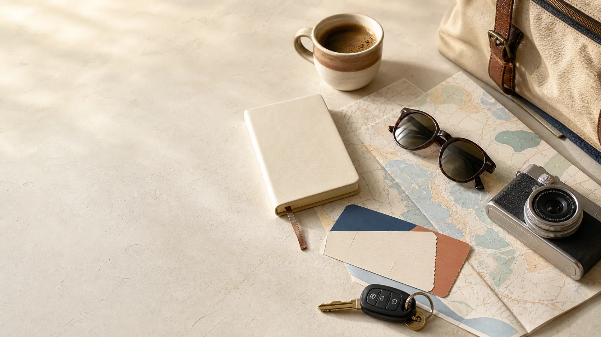

Maps
Directions, saved places and downloaded areas.
Open Maps, new tab
Useful on the road
Directions, saved places and downloaded areas.
Open Maps, new tabUse the final official forecast before coastal drives and ferry days.
Link added during final travel checkSchedules, check-in and disruption updates.
Link added after bookingCheck-in, baggage and flight status.
Link added after bookingPickup, return and roadside assistance.
Link added after bookingAddresses, check-in notes and host contact.
Link added after bookingRoute at a glance
Port connection and cabin crossing to Souda.
View Day 2Open in Maps, new tabBring the essentials